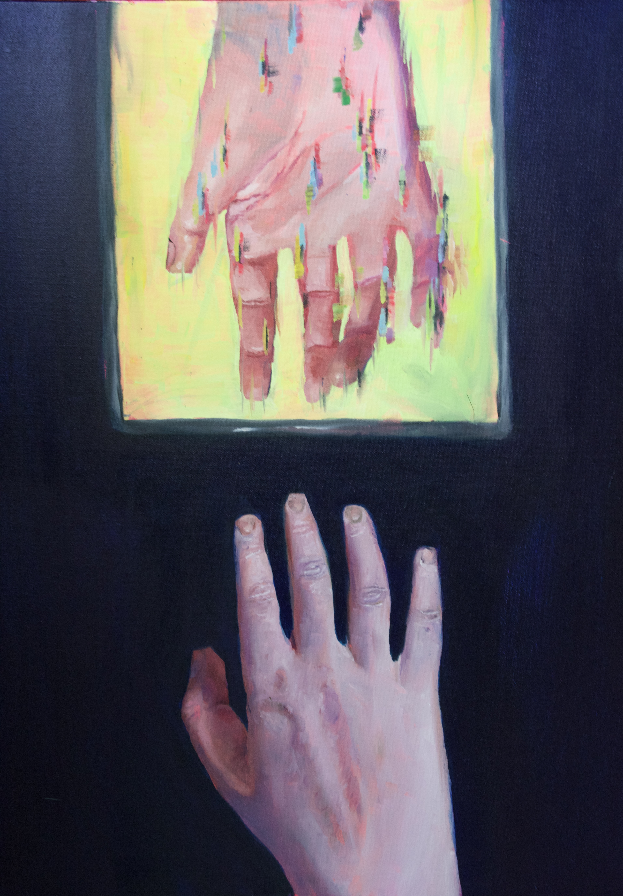
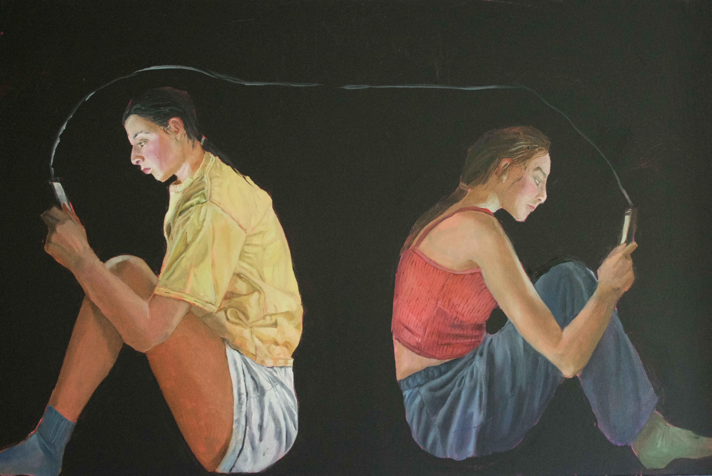
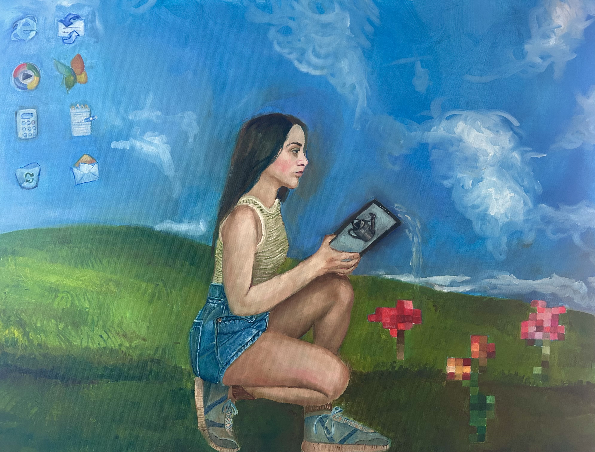
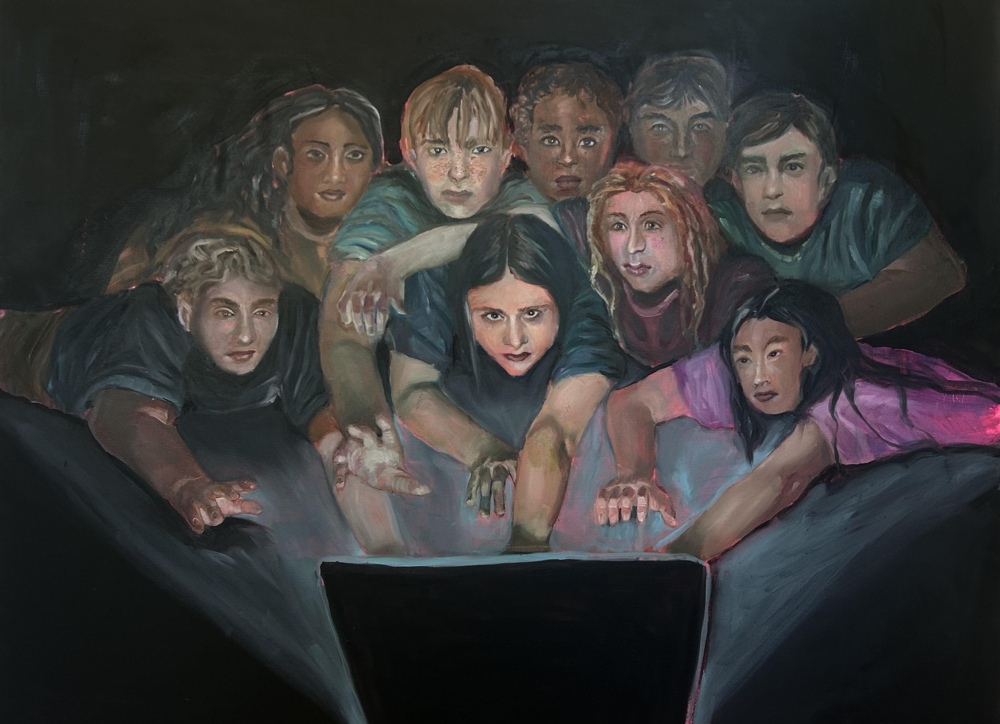
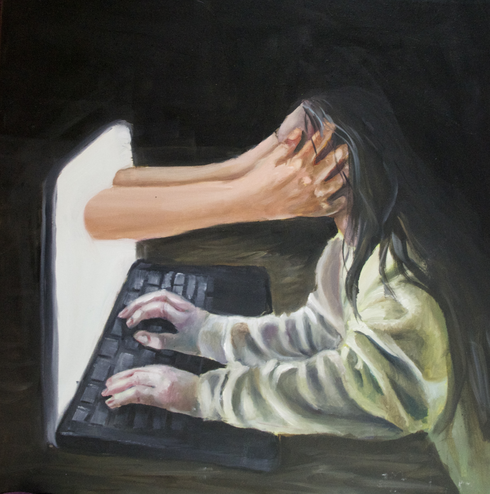
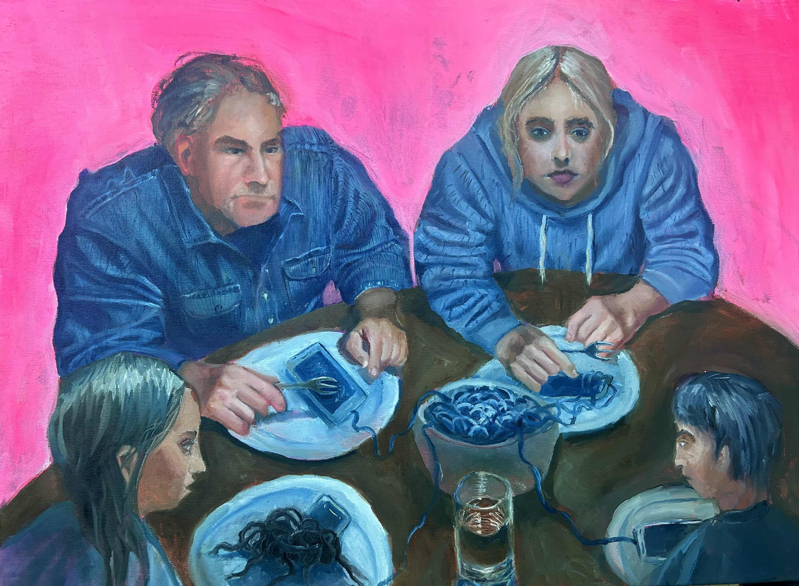
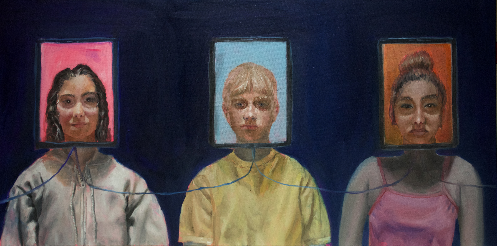

my ap portfolio
this was my ap portfolio, centered around answering how technology has both brought us together and driven us apart.
a helping hand...?

In this piece I explored the nuansce of online connection-how it often seems a helping hand but under the surface (or screen), is only a facade. I tried to emphasize this through the screen's hand glitch effect, which reflects that its not genuine connection
Worlds Apart

In this piece, two figures sit back-to-back, each illuminated by their own phone. Although technology connects people across great distances, the painting questions whether those digital connections can replace meaningful relationships with those physically beside us.
Untitled

In this piece, a close-up portrait illuminated solely by a phone screen explores how digital devices shape self-perception, and often contribute to feelings of isolation and disconnection from the world around us.
untitled

In this piece, a girl waters pixelated flowers in a landscape inspired by the Windows XP wallpaper. The painting reflects on how we curate our digital images and identity, often in a way that feels superficial or performative.
untitled

In this piece, screen-hungry zombies crawl towards the small computer screen, symbolizing society's obsession with technology and the loss of genuine human connection.
plugged in

In this piece, I depict a solitary figure who has a cable plugged into their back. The painting explores the paradox of being constantly connected to technology while experiencing emotional isolation from the physical world.
cordset

This piece focuses on a person wearing a corset woven from cords/wires, symbolizing the comments, expectations, and opinions absorbed through social media. The piece explores how online validation and criticism become intertwined with personal identity and self-worth.
Hijacked

In this piece, a dulled, almost zombie-like figure sits at a computer while artificial, saturated hands emerge from the screen, gripping their head. The piece explores the overwhelming influence of technology on our lives and the loss of genuine human connection.
Family Dinner

In this piece, a family gathers around the dinner table, but their meals have been replaced by tangled charging cords and phones. The painting examines how technology occupies spaces once reserved for conversation, turning moments of connection into shared isolation.
connected...?

In this piece, three individuals wear glowing screens in place of their faces, symbolizing how digital identities can overshadow authentic selves. The piece explores how technology allows us to curate who we are while simultaneously disconnecting us from genuine human interaction.
process work
This is some of my process work for some of the pieces.